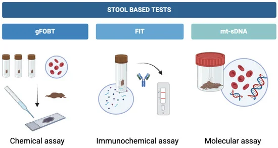
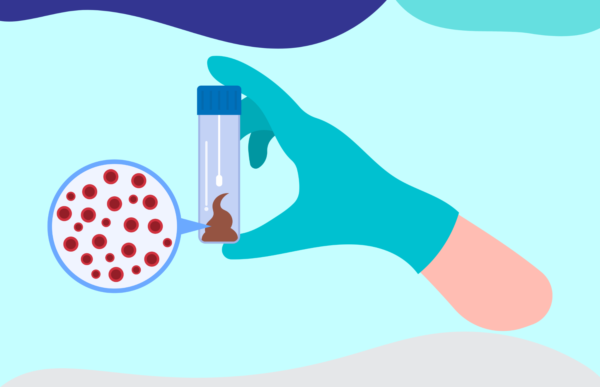

These tests involve the examination of the stool for typical markers of colon cancer such as blood. Typically, these tests are non-invasive and are much more accessible and easily done than visual exams as they can be done at home, however this comes with the drawback of having to conduct more frequent tests.
Common types of this test include:
Screening should be started at age 45, and reduce your frequency around age 75, and stop completely at age 85.

| Test Type | Procedure | Screening Frequency |
|---|---|---|
| Fecal immunochemical test (FIT) | Checks for hidden blood in the stool and can be done at home. No dietary restrictions are required. | Every year is recommended, starting at age 45. A colonoscopy is needed if the test results are positive. |
| Guaiac-based fecal occult blood test (gFOBT) | Checks for hidden blood in stool less accurately than the FIT test, but can be done at home. It does not differentiate between blood from the digestive tract or from the colon. Requires drug and diet restrictions. | Every year is recommended, starting at age 45. A colonoscopy is needed if the test results are positive. |
| Multitargeted stool DNA/RNA tests (Cologuard) | Screens the stool for mutated sections of DNA/RNA in cancer cells, in addition to blood. This test can be done at home. There are no drug or dietary restrictions. Popular companies include Cologuard. | Every three years, starting at age 45. |

These tests give visualization inside the colon and rectum of the patient to check for any abnormal areas that might mean cancer or polyps.
Types of this test include:
| Test Type | Procedure | Screening Frequency |
|---|---|---|
| Colonoscopy | A tube with a light and video camera is inserted through the anus into regions of the lower intestine. Biopsies can be taken here. Special diet and fasting are required before. It can be uncomfortable. | Every 10 years starting at age 45. Genetic risk factors increase frequency to every 1-5 years. |
| CT colonography (virtual colonoscopy) | X-rays and CT scans take 3D pictures of the inside of the rectum and colon. Sedation is not required. A catheter is placed into the rectum. It is less invasive. Special diet and fasting are required before. | Every 5 years. |
| Sigmoidoscopy | Similar to a colonoscopy, but rather than examining the entire colon, it only examines the lower part of the colon through the rectum. | Every 5 years. |
These tests look for any possible signs of colorectal cancer or precancerous polyps by examining a person's blood. They are done in a clinic where your blood is drawn and then sent to a lab. The lab looks for DNA changes that could suggest the presence of cancer or precancer cells.
Ages 50-85 → every 3 years